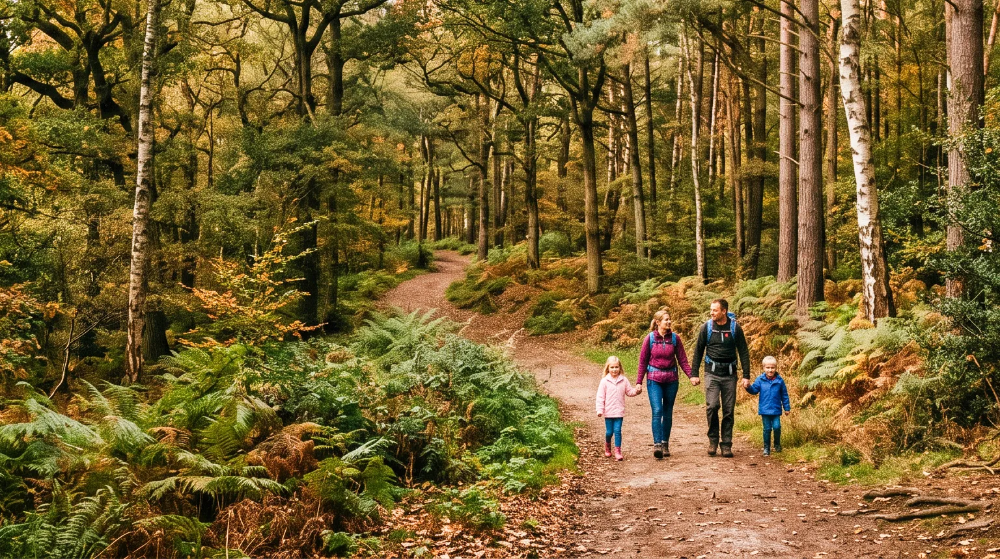
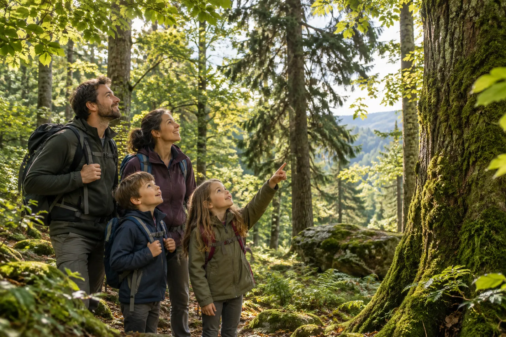
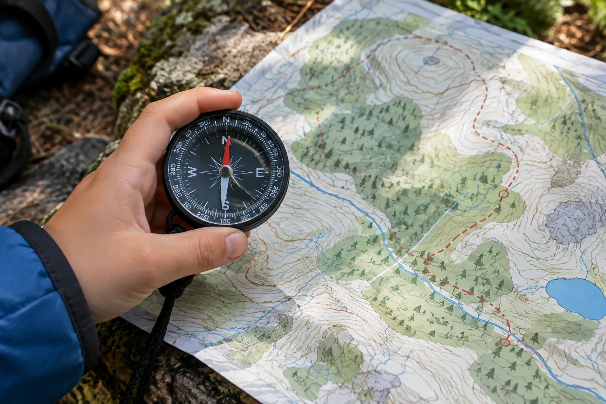
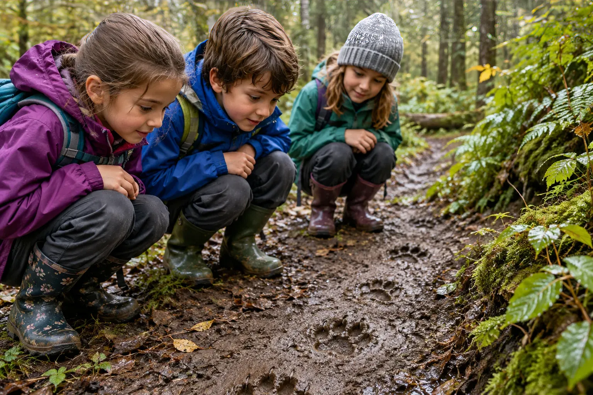
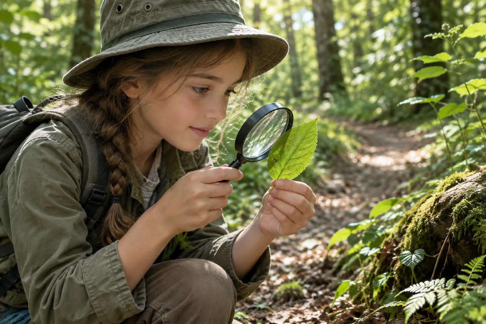
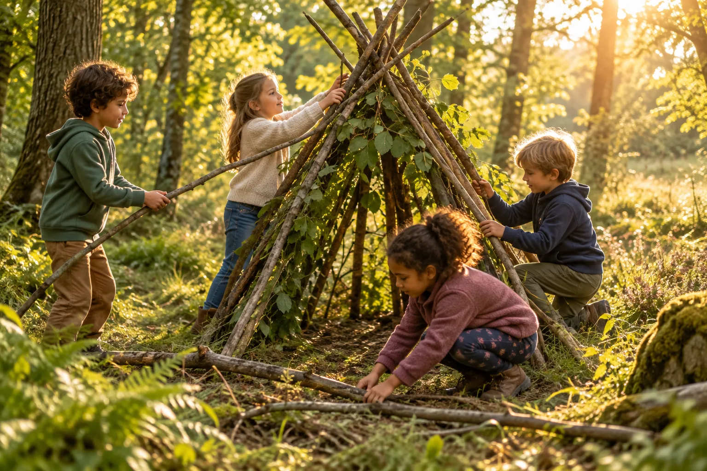

Bienvenue sur Sylva Family, un blog consacré aux découvertes en forêt dans le Limousin. Vous y trouverez des idées de sorties, des conseils d’orientation et des activités pour apprendre à observer et à respecter la nature en famille.






Balades et orientation
Une première balade en forêt en famille
Une sortie en forêt ne nécessite pas de matériel compliqué. Une tenue adaptée, une bouteille d’eau, un carnet et une grande curiosité suffisent pour commencer à observer les arbres, les feuilles et les petits habitants des sous-bois.
Pour rendre la promenade plus vivante, notre botaniste est là pour expliquer la forêt et répondre aux questions des petits et des grands. L’objectif n’est pas d’aller vite, mais de prendre le temps de regarder.
Apprendre à s’orienter avec une boussole
La boussole transforme une promenade en véritable exploration. À l’aide de notre animateur, les enfants peuvent apprendre à reconnaître les points cardinaux, suivre une direction simple et comparer la carte avec ce qu’ils voient réellement sur le terrain.
Nous commençons par un petit parcours avec quelques étapes faciles. Chaque membre de la famille peut participer : l’un tient la carte, l’autre observe la direction et un troisième cherche le prochain repère.
Prochaine sortie boussole en famille : samedi prochain, départ à 9h de Limoges. Il ne reste que quelques places, pensez à réserver !
Retrouvez ci-dessous le point de départ de nos balades : il ne vous reste plus qu’à préparer votre boussole !
Faune sauvage
Sur la piste des animaux sauvages
Les animaux ne se montrent pas toujours, mais ils laissent de nombreux indices : empreintes, plumes, poils, noisettes grignotées, chemins dans les herbes ou branches frottées contre un arbre.
Observer ces traces permet d’apprendre à se déplacer discrètement et à respecter la distance nécessaire avec la faune sauvage. Notre pisteur explique aux enfants et aux adultes comment repérer ces traces. Une paire de jumelles et un carnet d’observation peuvent rendre l’activité encore plus passionnante.
Connaître et construire
Reconnaître les arbres et les plantes
La forêt offre un formidable terrain d’apprentissage. La forme des feuilles, l’écorce, les fruits et l’environnement proche permettent de commencer à identifier quelques espèces communes du Limousin. Notre botaniste aide les enfants à constituer un herbier.
Il est important de ne jamais consommer une plante trouvée au hasard. Une identification doit être confirmée par une personne compétente, et l’observation doit toujours se faire dans le respect des espèces et des règles du lieu.
Construire un abri : apprendre en coopérant
Construire un abri temporaire permet aux enfants de découvrir les principes d’une structure stable et de réfléchir à l’utilisation raisonnée des matériaux disponibles. Cette activité développe l’observation, l’organisation et la coopération.
L’exercice est réalisé avec l’un de nos accompagnateurs et dans un espace autorisé. Il ne faut pas couper d’arbres vivants ni dégrader le milieu naturel. L’abri est ensuite démonté afin de laisser la forêt dans son état initial.
Le matériel pour construire un abri
Matériel
Utilisation
Conseil
Branches mortes
Former la structure de l’abri
Les ramasser au sol, ne jamais en couper sur un arbre vivant
Ficelle naturelle
Attacher les branches entre elles
Choisir du chanvre ou du jute, et la récupérer à la fin
Gants de jardinage
Protéger les mains des échardes
Prévoir une paire par enfant
Feuilles mortes et fougères sèches
Couvrir l’abri et le rendre plus étanche
Les prélever au sol, sans arracher de plantes
Mètre ou ficelle de mesure
Comparer la taille des branches
Un bâton peut servir d’unité de mesure
Ciseaux à bouts ronds
Couper la ficelle à la bonne longueur
Réservés à la ficelle, jamais aux végétaux
Trousse de premiers secours
Soigner une écharde ou une petite égratignure
Vérifier son contenu avant chaque sortie
Sifflet
Rassembler le groupe ou donner l’alerte
Convenir d’un signal simple avec les enfants
Carnet et crayon
Dessiner le plan de l’abri avant de construire
Noter aussi les étapes réussies et les difficultés
Sac pour les déchets
Laisser le lieu propre en repartant
Ramasser aussi les déchets trouvés sur place
Restons en contact !
Reçois nos nouveaux articles et nos dernières idées de sorties en forêt par e-mail.